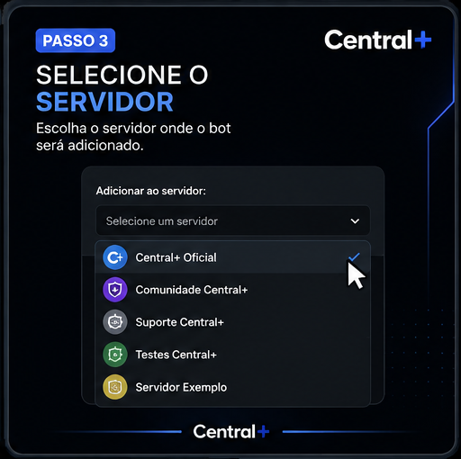
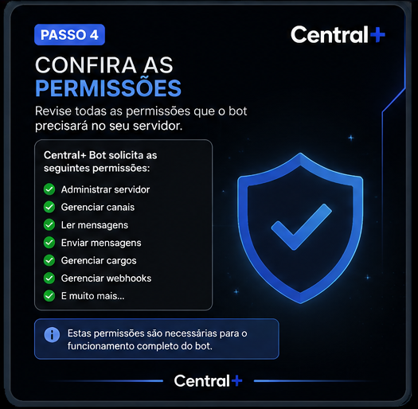
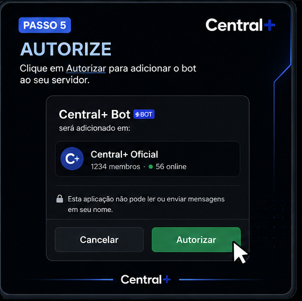

DISCORD • BOTS
Como adicionar um Bot
Aprenda passo a passo como adicionar um bot ao seu servidor do Discord.
← Voltar para BotsEscolha um Bot
Primeiro, escolha um bot confiável que tenha as funções que você deseja utilizar no seu servidor.
Abra a página do Bot
Entre na página do aplicativo e procure a opção utilizada para adicioná-lo ao Discord.
Escolha o servidor
Selecione o servidor no qual você deseja instalar o aplicativo.

Confira as permissões
Confira cuidadosamente as permissões solicitadas pelo aplicativo antes de continuar.

Autorize o Bot
Depois de conferir tudo, confirme a autorização para finalizar a instalação.
